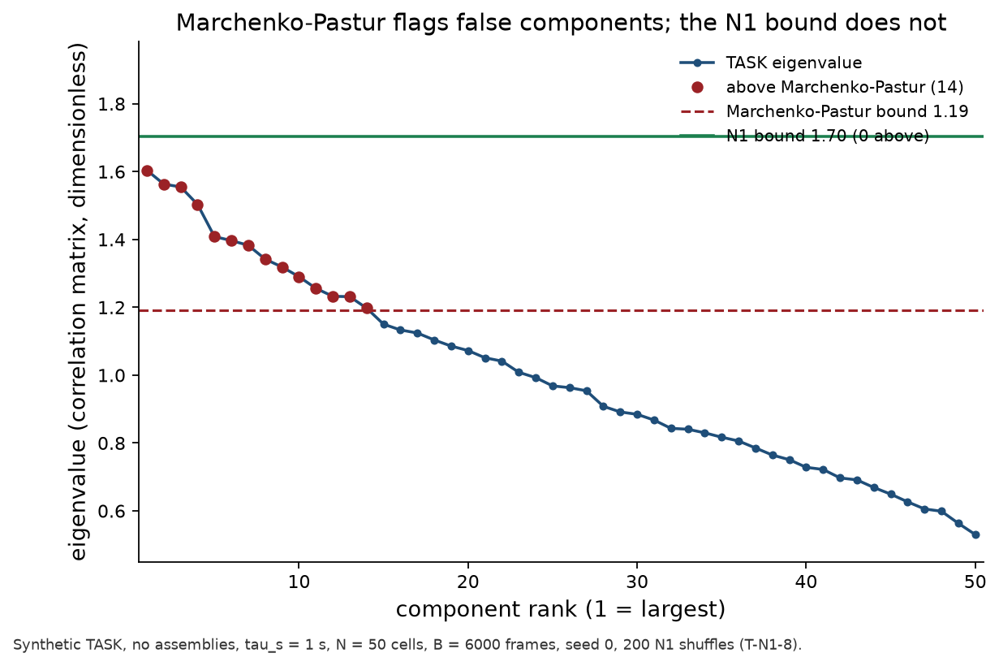
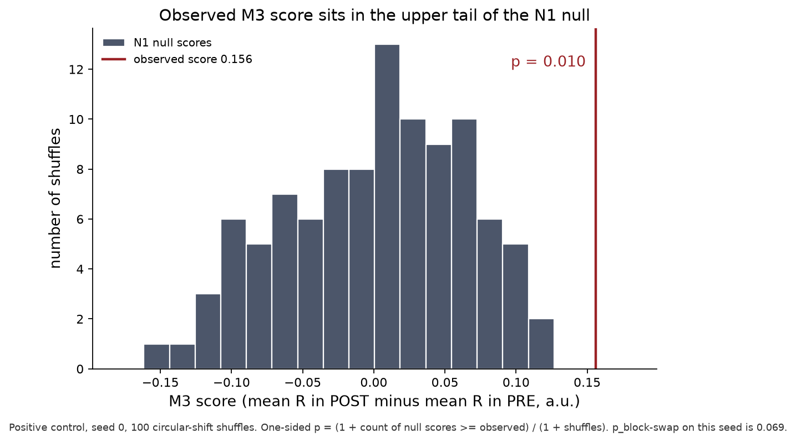
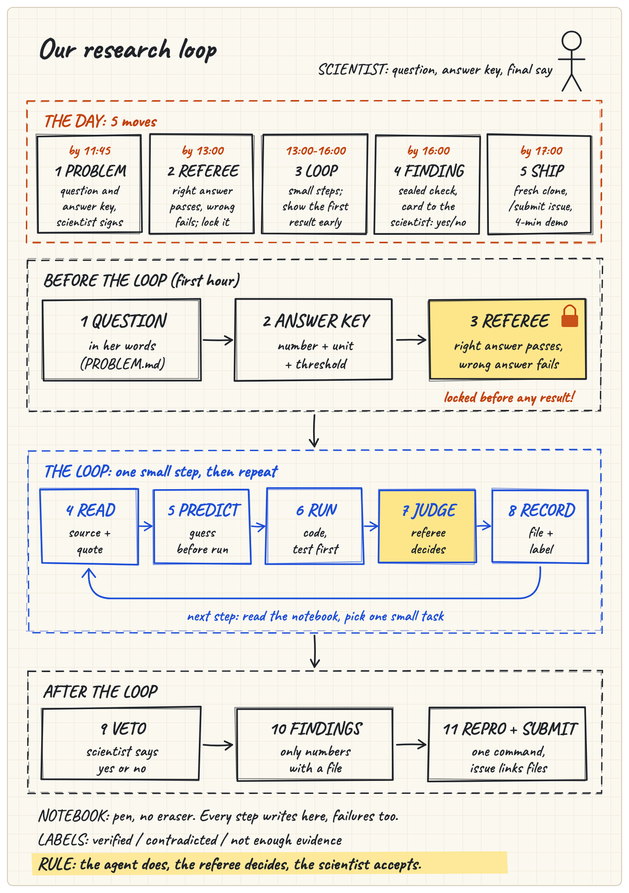
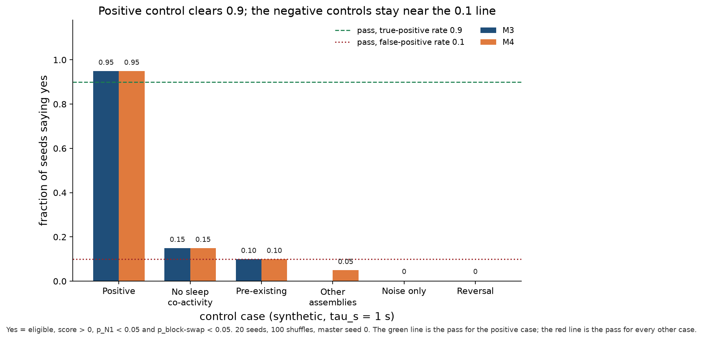
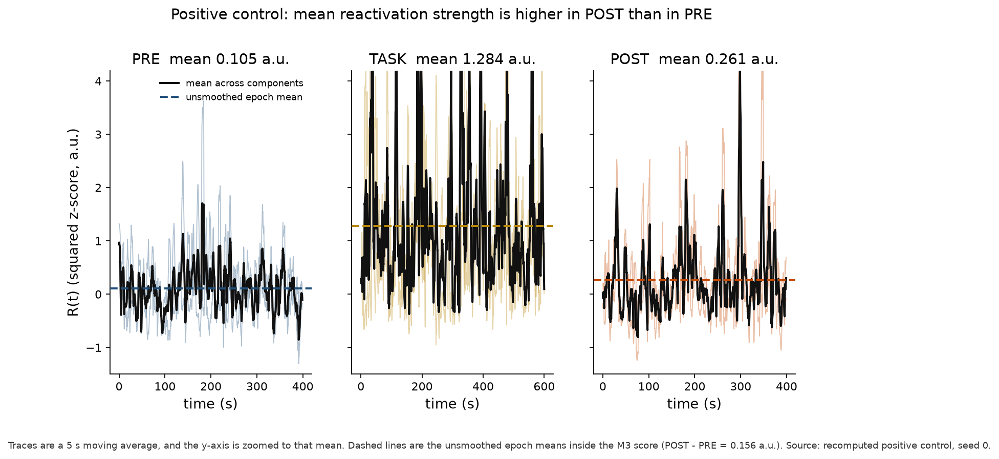
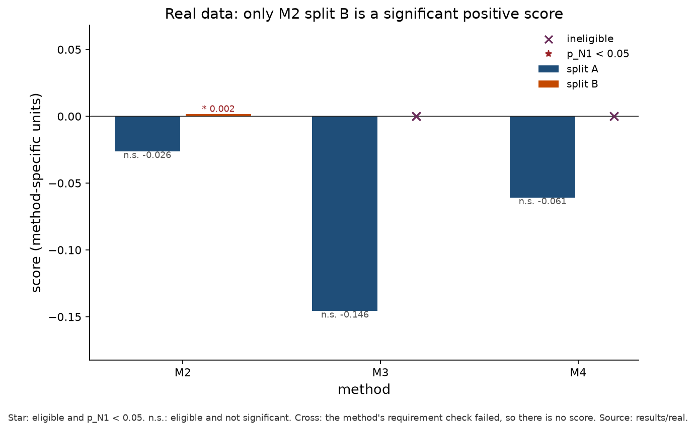
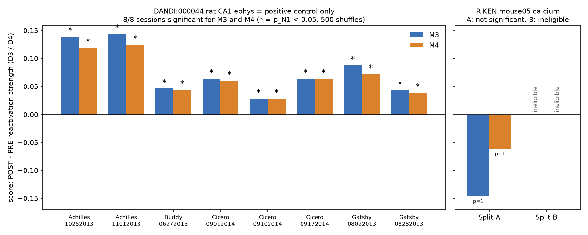
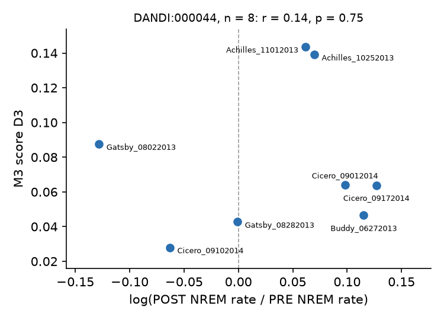

Claude Impact Lab, 7. November 2026 · Team Shift Happens · Repo github.com/BatuCani/hackathon-2026-11-07
Quellen, alle aus diesem Repo: README.md, PROBLEM.md, JOURNAL.md, SUBMISSION.md, journal/engineer-b.md, research/, results/real/, results/figures/. Keine Zahl in diesem Text steht außerhalb dieser Dateien.
In einem Satz. Die Werkzeugkiste findet Reaktivierung dort, wo sie bekannt ist (acht von acht Ratten-Sitzungen). Auf der einen Maus mit Calcium-Bildern sagt sie ehrlich zu wenig Belege: nur eine Methode darf in beiden Hälften mitstimmen, und die sagt nicht ja.
Wenn ein Tier etwas erlebt, sind bestimmte Nervenzellen gleichzeitig aktiv. Im Schlaf danach taucht dieses gemeinsame Muster oft wieder auf. Das nennt man Reaktivierung. Sie gilt als ein Stück des Erinnerns. Man schaut immer dieselben Zellen in drei Abschnitten an: PRE (Schlaf davor), TASK (das Erlebnis), POST (Schlaf danach). Reaktivierung heißt: POST ähnelt TASK mehr als PRE. PRE ist die Kontrolle, ob das Muster schon vorher da war. Quelle: PROBLEM.md, Zitat aus research/team-brief.md; research/source-of-truth.md §1.
Replay ist etwas anderes: dort kehrt auch die zeitliche Reihenfolge wieder, oft zeitlich gerafft. Dieses Projekt misst nur Reaktivierung (gleichzeitiges Feuern, ohne Reihenfolge). Die Sequenz-Methoden M5 bis M8 aus dem Team-Brief sind bewusst nicht gebaut. Quelle: research/briefing.md, Zitat aus dem Abstract von Tingley und Peyrache 2020; research/README.md.
Wörtlich, Abschnitt 3b-v, zitiert in research/briefing.md und SUBMISSION.md: eine Erregbarkeitsänderung könne die Paar-Korrelation „at least in part“ erklären, und diese Prüfung „is still missing“. Zur Fensterbreite: eine systematische Variation „is lacking“. Auf einem Datensatz stimmen zwei Replay-Maße kaum überein (R = 0,126). Quelle: research/briefing.md Abschnitt 2. Kalzium sieht tausende Zellen. Ein ungültiger Test erzeugt falsche Reaktivierung. Quelle: SUBMISSION.md „Open problem“.
Unsere Frage, festgeschrieben bevor es Ergebnisse gab (PROBLEM.md): Ähnelt in der RIKEN-Maus der NREM-Schlaf danach dem Wachabschnitt mehr als der NREM-Schlaf davor, je Methode? Und wie wahrscheinlich ist Reaktivierung, wenn nur Methoden zählen, die auf künstlichen Daten mit bekannter Wahrheit bestehen?
Anker ist die Übersicht von Tingley und Peyrache (2020), On the methods for reactivation and replay analysis, Phil. Trans. R. Soc. B 375: 20190231. Sie ist eine Methodenkritik, kein neues Experiment. Die Formeln stehen in research/source-of-truth.md. Der MATLAB-Code des Papers (RnR_methods) ist GPL und wurde nicht kopiert; die Werkzeugkiste ist in Python neu geschrieben (Apache 2.0). Quelle: research/briefing.md, README.md „Licences“.
Jede Methode liefert eine Zahl. „Ja“ heißt: die Zahl ist positiv (Schlaf danach ähnelt dem Erlebnis mehr als Schlaf davor) und sie ist seltener als in 5 von 100 Zufallsversionen. Der Zufall ist überall derselbe, N1, siehe Abschnitt 5. Eine Methode, die ihre eigenen Tests nicht besteht, wird berichtet, stimmt aber nicht mit. Quelle: PROBLEM.md „ANSWER KEY“.
Man schreibt für jeden Abschnitt auf, welche Zellen zusammen aktiv waren, wie ein Sitzplan: wer saß neben wem. Dann vergleicht man den Plan des Erlebnisses mit dem Plan des Schlafs danach und mit dem Plan des Schlafs davor. Die Zahl D1 ist die Ähnlichkeit TASK–POST minus die Ähnlichkeit TASK–PRE, als Differenz zweier Korrelationen, ohne Einheit. Ja, wenn D1 > 0 und p < 0,05 in jeder Hälfte, und wenn in PRE und in POST mindestens 300 NREM-Bilder liegen. Quelle: PROBLEM.md, M1-Zeile. Schwäche laut Paper: das Maß sieht die Vorgeschichte nur indirekt und hängt an der Feuerrate. Quelle: research/source-of-truth.md, M1.
M2 fragt nicht nur „ähnelt der Schlaf danach dem Erlebnis?“, sondern „ähnelt er ihm mehr, als man aus dem Schlaf davor schon erwarten würde?“. EV ist dieser bereinigte Anteil. REV ist dieselbe Rechnung mit vertauschtem Vorher und Nachher. Wenn die Gegenprobe genauso viel „erklärt“, war es nicht das Erlebnis. D2 = EV − REV, ohne Einheit. Ja nur, wenn D2 in beiden Hälften positiv ist und beide p-Werte unter 0,05 liegen. Das Paper verlangt dafür mehrere Sitzungen. Hier gibt es nur zwei Hälften derselben Aufnahme, deshalb stünde selbst ein Ja unter diesem Vorbehalt. Quelle: PROBLEM.md, M2; research/briefing.md, Tabelle der Methodenfamilien.
Während des Erlebnisses sucht die Methode Gruppen von Zellen, die gemeinsam lauter werden als Zufall. Das sind die „Akkorde“. Danach fragt sie, ob diese Akkorde im Schlaf danach stärker klingen als im Schlaf davor. D3 ist diese Differenz, in quadrierten z-Werten pro Bild. Ja, wenn D3 > 0 und p < 0,05, mindestens zehn Zellen, mindestens eine Komponente über der Zufallsgrenze, und mindestens fünf Bilder pro Zelle in TASK. Quelle: PROBLEM.md, M3. Die klassische Zufallsgrenze heißt Marchenko-Pastur. Sie setzt voraus, dass die Zeitpunkte unabhängig sind. Genau das ist bei Kalzium fraglich, siehe Abschnitt 5.
Hauptkomponenten stehen senkrecht aufeinander. Wenn zwei Gruppen sich Zellen teilen, verschmiert PCA sie. ICA versucht, die überlappenden Gruppen auseinanderzuziehen. D4 ist dieselbe Differenz wie D3, nur mit diesen entmischten Mustern. Die Schwelle ist wie bei M3, aber es braucht mindestens zwei bedeutsame Komponenten. Das Paper behauptet, ICA trenne überlappende Gruppen dort, wo PCA scheitert. Der eigene Test T-M4-1 hat diese Behauptung in der festgelegten Form nicht bestätigt (Abschnitt 7). Quelle: research/briefing.md Abschnitt 2e; journal/engineer-b.md Eintrag 2; PROBLEM.md, M4.
Zwei Datensätze, mit völlig verschiedener Rolle. DANDI ist keine biologische Vergleichsgruppe zur Maus. Art, Hirnregion, Messtechnik und Aufgabe sind überall anders. Quelle: SUBMISSION.md, mehrfach wiederholt.
| RIKEN, der eigentliche Fall | DANDI:000044, nur Positivkontrolle | |
|---|---|---|
| Was | Eine Maus (mouse05), Cortex, Zwei-Photonen-Kalzium, eine Schlaf-Sitzung. 6.920 Zellen mal 19.000 Bilder, zwei getrennte Stücke zu je 9.500 Bildern. | Vier Ratten, Hippocampus (CA1), Elektroden. Acht Sitzungen mit bekanntem Schlaf vor und nach einer echten Lernaufgabe (Grosmark und Buzsáki 2016). |
| Zeit | 7,65 Bilder pro Sekunde. Die Rate steht nicht in der Datei, sie kommt aus der Datenbeschreibung. Ein Bild dauert etwa 131 ms. | Spikes in Fenstern von 100 ms. Aufgabe = alle Bins der Maze-Phase. Pyramidenzellen, 41 bis 120 pro Sitzung. |
| Aufgabe | Keine. Ein Wachabschnitt zwischen zwei NREM-Phasen steht für TASK. Es wurde dabei nichts gelernt. Ein Nein ist deshalb der erwartbare Ausgang. | Echtes Labyrinth: lineare Bahn oder Kreisbahn, je nach Sitzung. PRE, MAZE, POST sind im Datensatz beschriftet. |
| Schlaf | Nur NREM in PRE und POST. Kodierung: 0 und 0,5 wach, 1 NREM, 2 REM. Die Aktivität ist die rohe OASIS-Entfaltung (Variable spike), nicht geglättet. | Nur NREM in PRE und POST, über die mitgelieferten Schlafstadien. |
| Rolle | Die Frage aus PROBLEM.md. | Prüft, ob die Werkzeugkiste „ja“ sagen kann, wo Reaktivierung schon bekannt ist. Sonst wäre ein Nein bei der Maus wertlos. |
Quellen: PROBLEM.md „Data and fixed choices“; research/datasets/calcium-vetting.md; research/datasets/ephys.md; SUBMISSION.md „Data and sources“. Die Dateien selbst liegen nicht im Repo (Zenodo 17667863, CC BY 4.0; DANDI wird gestreamt).
Zwei Hälften, vorher festgelegt. Hälfte A: Wachphase Bilder 5481–7306 (1.825 Bilder, etwa 239 s), davor 1.300 NREM-Bilder (170 s), danach 999 (131 s). Hälfte B: Wachphase Bilder 15006–15657 (651 Bilder, etwa 85 s), davor 2.657 NREM-Bilder (347 s), danach 2.669 (349 s). Die Hälften kreuzen die Lücke zwischen den beiden Aufnahmestücken nicht. Quelle: PROBLEM.md.
Welche Zellen. Mit allen 6.920 Zellen wäre die Regel „mindestens fünf TASK-Bilder pro Zelle“ in beiden Hälften verletzt. Vor jedem Ergebnis wurde entschieden: die 300 aktivsten Zellen, gemessen an der mittleren entfalteten Aktivität über beide Wachphasen zusammen, damit A und B dieselben Zellen nutzen. Die Fünf-Bilder-Regel wurde nicht gelockert. Hälfte B hat 651 TASK-Bilder und braucht 1.500. M3 und M4 sind dort nicht zulässig, das ist kein Nein. Quelle: PROBLEM.md „Not decided yet“, JOURNAL.md RECORD T1.
Ein p-Wert sagt, wie oft ein reiner Zufall ein mindestens so großes Ergebnis erzeugt. Der Zufall muss das behalten, was an den Daten echt ist, und nur das zerstören, was man prüfen will.
N1, die Analogie der versetzten Tonspuren. Jede Zelle behält ihre eigene Spur, auch ihr langsames Auf und Ab. Die Spur wird nur ringförmig verschoben, jede Zelle um einen eigenen Zufallsbetrag. Wer mit wem gemeinsam aktiv war, geht kaputt. Das eigene Zeitmuster jeder Zelle bleibt. 500 solche Verschiebungen, Startwert (Seed) 0, nur innerhalb einer Hälfte, nie über die Lücke. Der p-Wert ist einseitig: (1 + Anzahl der Zufallsversionen, die mindestens so hoch liegen wie der echte Wert) geteilt durch 501. Kleinster möglicher p-Wert: 1/501, also 0,002. Alpha = 0,05. Quelle: PROBLEM.md „Null model N1“; research/team-brief.md, zitiert in JOURNAL.md RECORD T4. Der Teamname kommt von dieser Verschiebung. Quelle: README.md „Team“.
Marchenko-Pastur ist eine Formel aus der Zufallsmatrix-Theorie. Sie sagt, wie groß der größte „Akkord“ wäre, wenn die Zeitpunkte unabhängiges Rauschen wären. Das Paper behandelt sie als nahezu sichere Grenze für Spike-Daten. Kalzium ist nicht unabhängig: Nachbarbilder hängen zusammen. Die Formel wird dann zu streng im falschen Sinn, sie ruft Muster aus, die nur der langsame Verlauf erzeugt.

Über 50 solcher Zufallsläufe: Marchenko-Pastur markiert in 50 von 50 mindestens fünf falsche Komponenten. Die N1-Grenze markiert in 2 von 50 mindestens eine. Die Schwellen (mindestens 45 von 50 bzw. höchstens 5 von 50) waren vorher festgelegt, beide Tests gelten als verifiziert. Quelle: journal/engineer-b.md Eintrag 3, Test T-N1-8; JOURNAL.md RECORD T4; README.md „Key findings“.

N1 ist keine Garantie. Liegen Gruppen schon im Schlaf davor, erzeugt N1 bei M3 zu viele Fehlalarme. Zusätzlich wird ein Blocktausch berichtet (20-Sekunden-Blöcke, PRE/POST neu gemischt). Er ist eine Zusatzspalte, nicht Teil der Ja-Schwelle für M3 und M4. Quelle: journal/engineer-b.md; PROBLEM.md, Entscheidung 15:45.
Zustand lebt in Dateien, nicht im Chat. Reihenfolge: Literatur lesen, Frage und Antwortschlüssel sperren, Schiedsrichter-Tests schreiben, dann pro Aufgabe lesen, vorhersagen, rechnen, urteilen, aufschreiben. Eine Vorhersage wird committet, bevor der Lauf startet. Ein Befund ist eine Zahl mit einer Ergebnisdatei. Fehlschläge bleiben stehen, Schwellen werden danach nicht verschoben. Labels: verifiziert (Vorhersage eingetroffen), widersprochen (nicht eingetroffen), zu wenig Belege. Quelle: README.md „Research loop“; JOURNAL.md „Loop“.

Der Antwortschlüssel wurde am 7. Nov 2026 um 16:11 von Batu als Team-Lead unterschrieben, ohne Wissenschaftlerin im Team. Die Entscheidungen (Wachphasen, 300 Zellen, kein Pflicht-Blocktausch) liegen im Commit 20a62a8 um 15:44, vor dem ersten echten Ergebnis um 15:48. Am Schlüssel wurde nach einem Ergebnis nichts geändert. Quelle: PROBLEM.md „Signature“; JOURNAL.md RECORD T0 sign-off.
| Loop | Vorhersage, vorher festgeschrieben | Ergebnis | Label |
|---|---|---|---|
| T1 Lader | Bildzahlen wie im Vetting-Bericht. Zellzahl nach der Entscheidung: 300 in beiden Hälften. | A: 1.300 / 1.825 / 999. B: 2.657 / 651 / 2.669. Dieselben 300 Zellen. B für M3/M4 unzulässig. | verifiziert |
| T-N1-8 Grenze | Marchenko-Pastur viele Fehlalarme; N1 selten (etwa 1 von 20). | MP mindestens 5 falsche Komponenten in 50/50. N1 mindestens eine in 2/50. | verifiziert |
| T-M4-1 Überlapp | ICA trifft die wahren Gruppen mit Ähnlichkeit mindestens 0,9, PCA bleibt unter 0,8. | Seed 0: ICA 0,911, PCA 0,817. PCA liegt über der Schwelle. Über Seeds 0–9 erreicht ICA 0,9 nur in 5 von 10. | widersprochen |
| T5 M2, künstlich | Positivkontrolle mindestens 9/10. Vorhandene Gruppen: höchstens 2/10 falsche Ja. | Positiv 10/10. Vorhandene Gruppen: 6/10 falsche Ja. Mit Blocktausch fällt die Positivkontrolle auf 8/10. | widersprochen |
| T5 M2, RIKEN | D2 > 0 und p < 0,05 in beiden Hälften, also Ja, aber wegen des Tests nicht deutbar. | A: D2 = −0,026, p = 1,0. B: D2 = +0,0017, p = 0,002, Blocktausch p = 0,25. Schlüssel-Antwort: nein. | widersprochen |
| T2 M1, RIKEN | D1 < 0 in beiden Hälften, p > 0,05, also kein Ja. | A: D1 = −0,069, p = 1,0. B: D1 = +0,006, p = 0,19. Kein Ja. Das kleine Plus in B widerspricht dem erwarteten Minus. | widersprochen |
| T3/T6 M3 und M4, RIKEN | B unzulässig. A zulässig. Vorzeichen in A ungewiss, eher ≤ 0. Gesamt höchstens zu wenig Belege. | B unzulässig (651 < 1.500). A: D3 = −0,146, D4 = −0,061, beide p = 1,0, 15 Komponenten. | verifiziert |
| T7 Urteilsregel | Die drei Ausgänge und die Sonderfälle (zu wenige Methoden, umgekehrte Richtung) wie in PROBLEM.md. | Neun Tests bestehen, inklusive der Textausgabe für summary.md. | verifiziert |
| DANDI M3/M4 | M3 sagt in mindestens 6 von 8 Sitzungen ja. M4 dieselbe Richtung. Blocktausch seltener signifikant als N1. | M3 ja in 8/8, D3 von +0,028 bis +0,144, p = 0,002 überall. M4 8/8, D4 von +0,028 bis +0,125. Blocktausch p = 0,002 in 16/16, also nicht seltener. | verifiziert |
| Loop 2, M1/M2 auf DANDI | Beide bestehen „ja in mindestens 6 von 8“. Erwartet: M1 in 8/8, M2 in mindestens 7/8, mittleres EV > mittleres REV. | M1 ja in 6/8, M2 in 7/8. Mittleres EV 0,088 > mittleres REV 0,025. Die 8/8 für M1 traf nicht zu, die Bestehenslinie schon. | verifiziert |
| Loop 3, Feuerrate | Nicht gestützt: der Zusammenhang zwischen Ratenänderung und D3 ist schwach (|r| < 0,3 oder p ≥ 0,05). | r = 0,136, p = 0,749, n = 8. Ratenverhältnisse POST/PRE zwischen 0,880 und 1,135. | verifiziert |
| Loop 4, Fensterbreite | Robust: M3 sagt ja bei 50, 100 und 200 ms in drei großen Sitzungen (9 von 9). 200 Verschiebungen statt 500, vorher so entschieden. | Keine Ergebnisdatei. results/real/dandi_binsize.json und results/figures/binsize_m3.png fehlen. Im Journal steht kein RECORD. | kein Befund |
| T8, ein Befehl | Ein frischer Clone schreibt dieselben acht JSON-Dateien Byte für Byte. | Acht sha256-Treffer, 61 Sekunden, Seed 0, 500 Verschiebungen, Commit b11e8d0. | verifiziert |
| Urteil, 16:32 | Die gesperrte Regel, angewandt auf die acht RIKEN-Dateien. | Zu wenig Belege. Wie wahrscheinlich: 0/2 in Hälfte A, 0/1 in Hälfte B. | aufgeschrieben |
Zeilen aus JOURNAL.md (PREDICT/RECORD mit Uhrzeit) und journal/engineer-b.md Einträge 2 und 3. Loop 4: die eigene Regel der Vorhersage sagt, ein fehlender Lauf zählt als zu wenig Belege. Das ist kein Ergebnis „robust“.
Vor den echten Daten bekommt jede Methode künstliche Sitzungen mit bekannter Antwort. Vier Sorten, beschrieben in SUBMISSION.md: eingebaute Reaktivierung, reines Rauschen, Gruppen die schon in PRE da sind, und eine reine Feuerraten-Änderung. Dazu die Umkehr (POST und PRE vertauscht) und Gleichaktivität ohne Schlafbezug. Eine Methode zählt nur, wenn sie die Positivfälle erkennt und die Negativfälle nicht als Ja verkauft.


300 aktivste Zellen, nur NREM in PRE und POST, Wachphase als Ersatz-Aufgabe, 500 N1-Verschiebungen, Seed 0. Quelle: results/real/summary.md und README.md „Results“.
| Methode | Hälfte A | Hälfte B | Stimmt mit? |
|---|---|---|---|
| M1, D1 | −0,069, p = 1,0, nein | +0,006, p = 0,19, nein | ja, beide Hälften |
| M2, D2 | −0,026, p = 1,0 | +0,0017, p = 0,002, Blocktausch 0,25 | nein, Test nicht bestanden |
| M3, D3 | −0,146, p = 1,0, 15 Komponenten | nicht zulässig, 651 < 1.500 Bilder | nur in A, und dort nein |
| M4, D4 | −0,061, p = 1,0 | nicht zulässig, gleicher Grund | nein, T-M4-1 |

In Hälfte A zeigen alle vier in die falsche Richtung. Das Wachmuster ist im Schlaf davor stärker als danach. Für M1 und M2: Ähnlichkeit TASK–PRE 0,222, TASK–POST 0,153. Die Muster sind in PRE und in POST jeweils für sich echt (M3, p jeweils 0,002), sie sind nur nicht spezifisch für den Schlaf nach dem Wachabschnitt. Das eine nominelle Ja (M2, Hälfte B) ist genau die Sorte Fehlalarm, die M2 auf künstlichen Daten mit schon vorhandenen Gruppen zeigt. Der Blocktausch stützt es nicht (p = 0,25). Quelle: SUBMISSION.md „In words“; JOURNAL.md RECORD T5 real data.
Bestehenslinie, vorher festgeschrieben: ja in mindestens 6 von 8 Sitzungen. Sonst würde die Werkzeugkiste bekannte Reaktivierung verpassen, und das Nein bei der Maus trüge diesen Makel.
| Methode | Ja, Wert > 0 und p < 0,05 | Spanne | Wo nein |
|---|---|---|---|
| M1 | 6/8 | −0,053 bis +0,286 | Cicero_09172014, Gatsby_08282013 |
| M2 | 7/8 | −0,038 bis +0,158 | Cicero_09172014. Mittleres EV 0,088 > mittleres REV 0,025 |
| M3 | 8/8 | +0,028 bis +0,144 | keine. p = 0,002, der kleinste mögliche Wert, in jeder Sitzung |
| M4 | 8/8 | +0,028 bis +0,125 | keine. Berichtet, zählt aber nicht, weil T-M4-1 offen ist |
Quelle: README.md „Results“; JOURNAL.md Loop 2 und DANDI-RECORD; results/real/dandi/summary.csv. Die eigene M2-Funktion, die ein Ja in jeder Sitzung verlangt, sagt trotzdem „nein“, weil Cicero fehlt. Das steht in results/real/dandi/M2_verdict.json und ist nicht der Schlüssel von Loop 2.

Die Methoden sind sich nicht einig, genau die Warnung des Papers. In der Sitzung Cicero_09172014 (zwei Meter, Metall, lineare Bahn) sagen M1 und M2 nein (D1 = −0,053, D2 = −0,038), M3 und M4 sagen ja (D3 = 0,064). Quelle: JOURNAL.md RECORD Loop 2.
Könnte ein bloßes Mehr-Feuern nach der Aufgabe die M3-Zahl erklären? Vorher festgelegt: Zusammenhang gestützt nur bei r > 0,7 und p < 0,05; nicht gestützt bei |r| < 0,3 oder p ≥ 0,05. Über die acht Sitzungen: Pearson r zwischen dem Logarithmus des Ratenverhältnisses POST/PRE und D3 ist 0,136, p = 0,749. Label: verifiziert, nicht gestützt. Drei Sitzungen feuern nachher weniger und haben trotzdem ein klares M3-Ja, zum Beispiel Gatsby_08022013 mit D3 = 0,088 bei Verhältnis 0,880. Quelle: JOURNAL.md RECORD Loop 3; results/real/rate_confound.json.

Bei der Maus ist die mittlere entfaltete Aktivität nachher niedriger als vorher: Verhältnis 0,767 in A und 0,872 in B, stärker als in jeder Ratten-Sitzung. Mit zwei Hälften ist das eine Hypothese, kein Test. Ein Abfall nach dem Wachabschnitt könnte zum negativen D3 in Hälfte A beitragen. Quelle: dieselbe Journal-Notiz.
Fensterbreite. Die zweite Lücke aus Abschnitt 3b-v hat eine Vorhersage (robust bei 50, 100 und 200 ms) und keinen aufgezeichneten Lauf. Dazu gibt es in diesem Text keine Zahl.
Die drei Wörter der Regel, in Alltagssprache:
Warum hier der dritte Fall und nicht der zweite: M2 und M4 dürfen nicht mitstimmen, M3 fehlt in Hälfte B. Es bleiben nicht zwei Methoden, die beide Hälften beurteilen. Dass die eine Methode, die das tut, nicht ja sagt, und dass in Hälfte A alle Vorzeichen negativ sind, steht in den Dateien. Es reicht unter der vorher geschriebenen Regel nicht für ein sauberes „nicht gestützt“ über die ganze Aufnahme. Quelle: PROBLEM.md; SUBMISSION.md.
Vertrauen, wie die Abgabe es selbst setzt: hoch, dass diese Pipeline auf dieser einen Sitzung unter den gesperrten Schlüsseln keine Reaktivierung zeigt. Niedrig, dass das etwas über Reaktivierung im Allgemeinen sagt. Eine Sitzung, ein Tier, keine echte Aufgabe. Quelle: SUBMISSION.md „Confidence“.
Die Regel steht in toolbox/verdict.py und wurde auf die Ergebnisdateien angewandt. run.py schreibt die acht JSON-Dateien, ruft die Methodentests und das Urteil aber noch nicht selbst auf. M2_verdict.json kommt aus scripts/run_m2.py. Quelle: README.md „How to run“; SUBMISSION.md „Loop wiring“.
| Person | GitHub | Rolle |
|---|---|---|
| Batu | BatuCani | Engineer A: Lader, M1, M2, Abgabe. Team-Lead, hat den Schlüssel unterschrieben. |
| youssef-110 | youssef-110 | Engineer B: N1, M3, M4, DANDI-Positivkontrolle. |
| ZixiTang | ZixiTang | Kriterium und Urteilsregel. |
Keine Wissenschaftlerin im Team. Menschen haben die Frage, den Schlüssel, die Zellauswahl und die Entscheidung festgelegt, welche Fehlschläge Fehlschläge bleiben. Der Code, die Tests, die Literatur-Notizen und das Journal sind überwiegend mit Claude geschrieben. Quelle: README.md „Team“; SUBMISSION.md „How Claude was used“.
Code Apache 2.0, Text CC BY 4.0. Paper nur zitiert, nicht kopiert. Daten bleiben bei ihren eigenen Lizenzen. Quelle: README.md „Licences“.
Ende. Alle Abbildungen liegen unter results/figures/ bzw. research/research-loop.png. Die Befehle, die sie zeichnen, stehen in results/figures/README.md und README.md „How to run“.